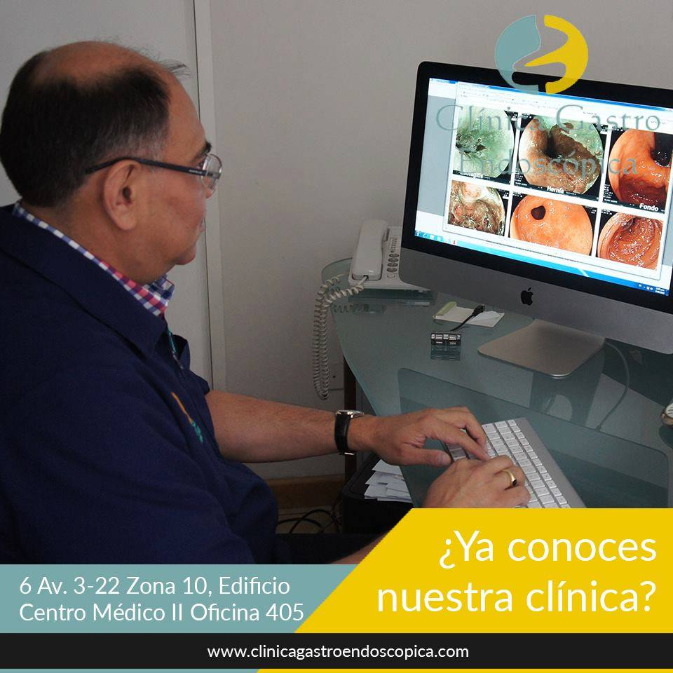
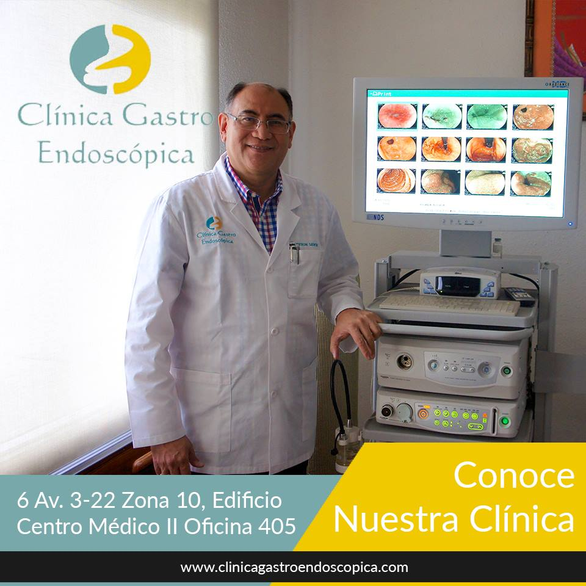
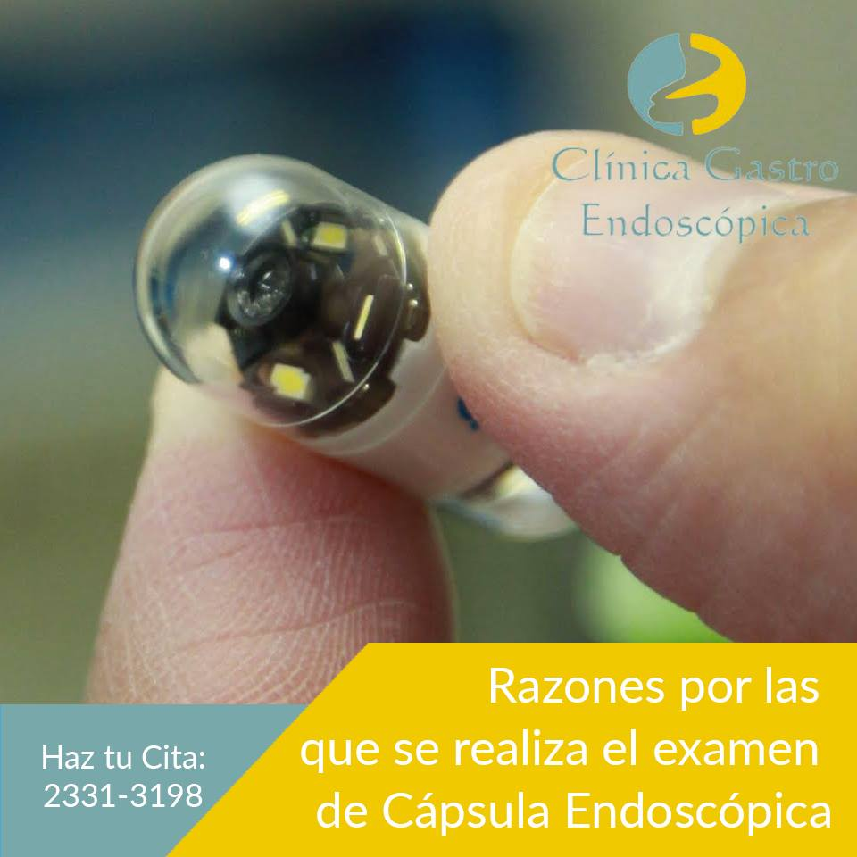

Endoscopia Gastrointestinal Alta
Evaluación visual del esófago, estómago y duodeno mediante endoscopio flexible.
Clínica Gastro Endoscópica

Clínica Gastro Endoscópica
Gastroenterólogo y Endoscopista | Guatemala
"30 años cuidando tu salud digestiva"
Agendar una CitaConózcame

El Dr. Byron H. Lewin fundó la Clínica Gastro Endoscópica en 1994, con el compromiso de brindar atención especializada de alto nivel a sus pacientes en Guatemala.
Es graduado como Médico y Cirujano de la Universidad Francisco Marroquín, con posgrado en Medicina Interna en el Hospital Roosevelt de Guatemala. Realizó su entrenamiento en Gastroenterología y Endoscopia Gastrointestinal en la Universidad de Chiba, Japón, y en Cápsula Endoscópica en Anaheim, California (2004).
Ha participado en cursos, congresos y seminarios de actualización en Estados Unidos, Europa y Brasil, y continúa perfeccionando su práctica en eventos internacionales cada año.
Más de 30 años
de experiencia clínica
Entrenado internacionalmente
Japón, EE.UU. y Europa
Fundador de CGE
desde 1994
Actualización constante
congresos internacionales
Trayectoria Profesional
Universidad Francisco Marroquín
Graduación como Médico y Cirujano en Guatemala
Hospital Roosevelt, Guatemala
Especialización en Medicina Interna
Universidad de Chiba, Japón
Formación avanzada en Gastroenterología y Endoscopia Gastrointestinal
Fundación — Ciudad de Guatemala
El Dr. Lewin funda la Clínica Gastro Endoscópica
Anaheim, California, EE.UU.
Certificación en Cápsula Endoscópica
Internacional
Participación anual en congresos en EE.UU., Europa y Brasil
Lo que ofrecemos
Diagnóstico y tratamiento especializado con tecnología de vanguardia
Evaluación visual del esófago, estómago y duodeno mediante endoscopio flexible.
Exploración del intestino grueso para diagnóstico y prevención del cáncer colorrectal.
Exploración no invasiva y completa del intestino delgado con tecnología de imagen avanzada.
Más información →Identificación y tratamiento de úlceras gástricas y duodenales con seguimiento personalizado.
Diagnóstico, clasificación y manejo de la enfermedad inflamatoria intestinal de Crohn.
Evaluación y diagnóstico de intolerancia al gluten mediante biopsia y serología especializada.
Identificación temprana y resección de pólipos para prevenir el desarrollo de cáncer digestivo.
Diagnóstico y tratamiento endoscópico urgente de hemorragias del tracto gastrointestinal.
Evaluación funcional de la motilidad esofágica para diagnosticar trastornos de la deglución.
Evaluación general del sistema digestivo, diagnóstico y plan de tratamiento personalizado.
Nuestra diferencia
Único en Guatemala con tecnología de cápsula endoscópica disponible en clínica privada para diagnóstico no invasivo del intestino delgado.
Más de tres décadas de práctica especializada en gastroenterología y endoscopia avalan cada diagnóstico y procedimiento realizado en la clínica.
Formación especializada en Japón, EE.UU. y Europa garantiza los más altos estándares internacionales de atención médica y técnica endoscópica.
Cada paciente recibe atención directa del Dr. Lewin, sin intermediarios, garantizando una relación médico-paciente de confianza y trato humano.
Tecnología de Vanguardia
Una de las pocas clínicas en Guatemala que ofrece este procedimiento
La cápsula endoscópica permite al médico visualizar el interior completo del aparato digestivo de manera no invasiva. El paciente simplemente ingiere una pequeña cápsula con cámara integrada que transmite imágenes en tiempo real, capturando miles de fotografías a lo largo de todo el trayecto digestivo.
Nuestra Clínica



Experiencias reales
"El Dr. Lewin es un médico extraordinario. Gracias a la cápsula endoscópica que me realizó, se detectó a tiempo una condición que requería tratamiento. Su atención es muy profesional y humana."
"Llevo 5 años como paciente del Dr. Lewin y siempre me ha brindado una atención excelente. Sus diagnósticos son precisos y se toma el tiempo para explicar cada procedimiento con detalle."
"Muy satisfecha con la atención recibida. La clínica es moderna, el personal muy amable y el Dr. Lewin es sumamente calificado. Definitivamente lo recomiendo."
Estamos para atenderle
Teléfono Principal
Secundarios: 2331-3198 | 2331-3199 | 2334-5759
Horario de Atención
Lunes a Viernes
7:00 – 15:30 hrs
Dirección
6 Avenida 3-22, Zona 10
Edificio Centro Médico II, Oficina 405
Ciudad de Guatemala
* Campos obligatorios. Su información es confidencial.